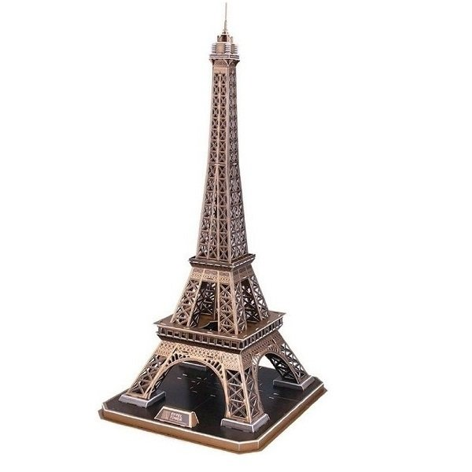

Страничка Андрея
Увлечения
На главную страницу
Люблю/Не люблю
Учёба в инженерке
Ниже представленна с моими увлечениями
| Список моих увлечений |
| Монтирование |
Сборка компьютеров |
Собирание 3D башен |
Монтироание
Заниматься монтированием мне понравилось ещё 4 года назад.Почему-то это мне приносит большое удовольствие.
Занимаюсь я им очень часто, а моя любимая программа, с помощью которой я и произвожу монтаж - Adobe Premiere Pro CS6
Сборка компьютера

Если быть точнее, я не совсем занимаюсь сборкой, а точнее, я мне говорят сумму, на которую должен быть собран
системный блок, и я подбираю до единой детали, из чего должен состоять системный блок. Можете обращаться !
Собирание 3D башен

Также мне очень нравится собирать различные 3D башни из всего мира. Материал конструктора состоит из околобумажного материала
Бывает сядешь на пол дня собирать эту башню, забудешь про весь мир и тебя интересует только то, как она будет выглядеть в финале.